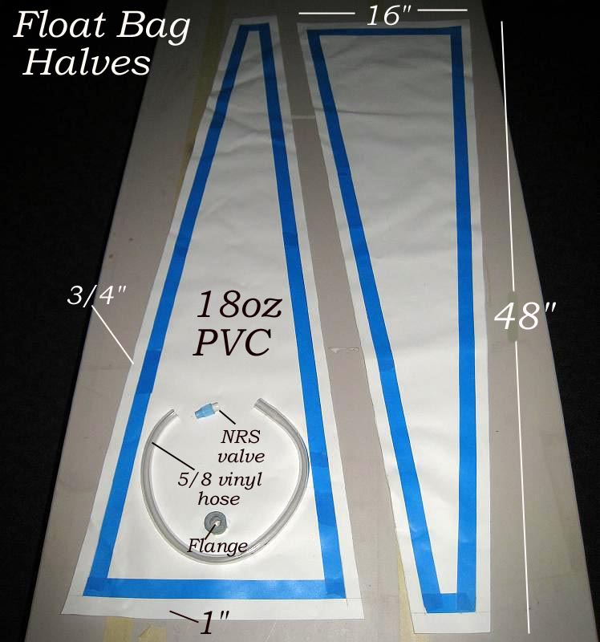

| PVC Floatation Bag ( page 2 of 8 ) | Menu Last Page Next Page |
|

The float bag consists of two sections of PVC glued together using one coat of HH-66 vinyl. The float bag can be any size you want. Plus, it can be made from only one section of PVC similar to the sponson described in the "PVC Accessories Menu". Tape is used to mask off the 3/4" glue area along each side, and the 1" glue area along the ends. Clean these areas with MEK to prep the vinyl surface. After the MEK dries completely, apply 1 coat of HH-66 vinyl cement with a small brush. Allow the cement to dry completely on each section of the bag. Next, connect the PVC flange.
|
|